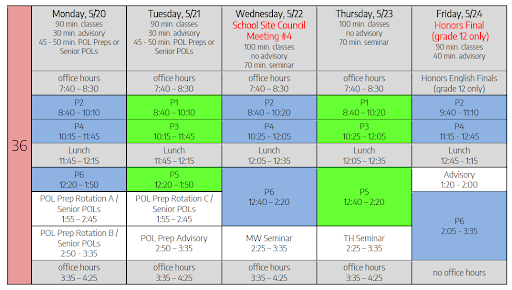

SchoolGuru
Keep Track of Assignment and Exam Dates
Conjecture
Busy students are often struggling to figure out when they should start an assignment. Procrastinators sometimes lose track of days until an exam when they should be studying for it. SchoolGuru will not only help students keep all of their
assignments in once place, but will remind them when to start those assignments, or study for that test. SchoolGuru is made for students, by students, in hopes of bringing what they desire most to an accessible platform online.
Definition
This program will accept user input with key information for each task such as class, importance, estimated completion time, etcetera.
The student will then be able to view each class and its assignments separately, or a time table
will be built with start and end dates for all input assignments. Students will have to put in all known assignments at once, since the site cannot track profiles or bring up data from previous sessions. However, the site will be able to email
the student the time table for the assignments so the student can print it out.

Quality
We are at the question of quality: why is solving this problem important? The issue of having too many assignments to keep track over will stress students out. Most of us have been there. On top of the importance to their careers and futures,
college can really affect the mental health of students. According to University of Pittsburgh Dean Bonner, 3 college age U.S. citizens take their own lives every day. That is why it's vital to do everything possible to help students stay
organized and motivated to succeed. This will be a very accessible site once the word spreads about it. Anyone with the ability to access the internet will be able to use it, and print out a copy of thier assignments while staying focused on
which ones are most important to complete now.
Policy
For construction of this site, HMTL, CSS, and Javascript will be utilized to construct the components of the website. The group building the code will document all comments for what each section of the code is for, as well as keep a living
document that catalogs changes to the code. Once completed, it will be hosted on GitHub, and made accessible to anyone online. In addition, anyone with a GitHub account will have the ability to add to to this assignment with a long tailed
contribution.
Elevator Pitch for SchoolGuru
Copyright. Dustin Chickis, Ella Schrand, Daya Sharon, Xavier Strittmatter, Sheng Yin, University of Pittsburgh